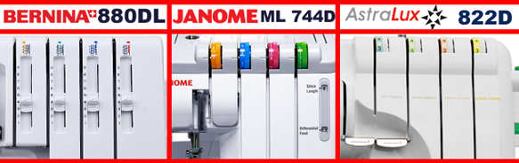
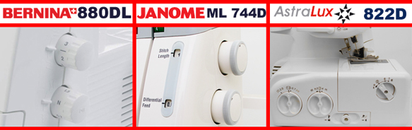

|  |
|
Начать обзор хочется с самой дорогой из вышеперечисленных машин - Bernina 880. Эта машина единственная, по стране производителю, представляет Европу, и будет соперничать с двумя чуть более дешевыми Азиатами. Сам бренд представлю кратко, так как уверен, что с этой знаменитостью вы знакомы. Bernina - это швейцарское качество и надежность, ну и конечно занимает одну из первых позиций в рейтинге популярности и доверия покупателей в мире. 880-я удобна и проста. Этот 2-3-4 ниточный оверлок выполняет 15 операций, совмещая в себе все лучшие качества краеобметочной машины. С этим аппаратом вы с легкостью воплотите все свои задумки. Следующей осветим детище, наверно, самой популярной марки в СНГ Janome 784. Оверлок этот наследник модели Janome 744D, собственно это его копия. Скажем прямо, «дедушка» эргономически не самый удобный вариант, да и шумит он сильнее остальных. Зато обладает мусоросборником, который экономит ваше время, не занимая его уборкой стола и пола после шитья. Но смущает серый металл в изобилии присутствующий в оверлоке, который является силумином. Ну и наша темная лошадка - оверлок Astralux 822D. Фирма достаточно молодая, но уже заявляет, что может побороться с фирмами гигантами в некоторых сегментах рынка. Тайваньцы постарались сделать свою машину наиболее удобной и внешне приятной. Что ж - это у них получилось практически в полном объеме: рукавная платформа, нижний самозатачивающийся нож, удобно расположенные переключатели и регуляторы, заправитель нижнего петлителя - все это придает особой легкости шитью. |
|  |
|
Возьмем все три машины, заправим, оставим заводское натяжение нитей (все на 4) и четырехниточный обметочный шов. Обметаем в два слоя ткани х/б, джинсу и трикотаж. «Бернина» без труда заправляется и шьет все ткани с одинаково хорошей строчкой без пропусков и «ускользания» нитей с положенных в шве мест. Как приятный, конечно не особо полезный, бонус 880-я прошила и обрезала до 6-ти слоев джинсы.«Джаном» справилась с хб, оставив нам не большое поле для доработки натяжения. Джинса показала нам очень даже приличную строчку, если бы не один пропуск ( мучить машину во много сложений уже не захотелось ). С трикотажем машинка справилась на твердую 4-ку, чуть стоит подтянуть нить верхнего петлителя. «Асталюкс» с ходу показал результат Bernina на х/б ткани и джинсе, под трикотаж пришлось поэкспериментировать с натяжением. Лидерство в этом тесте захватила Bernina, за ней следом Astralux, ну а Janome при все же не плохих результатах остался позади. |
|
Перенастраиваем со шва из прошлого теста на ролевый и шьем на тюлевой ткани иголками с номером 60. Bernina вновь порадовала. И настройки легки и удобны, а строчка очень впечатляющего качества, как на промышленной машине. Janome, показала тоже вполне достойный результат в плане шва. Но вот перенастройка на «любителя», язычок переключается в положение R не за один прием, а аж за 3! Как не странно, но и Astralux сделал строчку на 5, да и перенастройка не вызвала затруднений. Тут первенство заняли два оверлока Bernina и Astralux, ну а Janome осталось чуть позади. |
|
Оставляем все три аппарата работать на холостом ходу на 1.5 часа. Первые полчаса все оверлоки работают без нагрева и не естественных для них звуков. Через час Astralux чуть нагрелся, остальные машины не поменяли свое поведение. Ну а на излете теста стало ясно, что больше никаких изменений нам ждать не приходится, кроме легкого нагрева Тайваньца. Janome и Bernina имеют еще большой запас для беспрерывной работы, но и ресурс Astralux не исчерпан. |
В данной статье мы провели сравнение оверлоков Bernina 880, Janome 744D и Astralux 822D. Получить информацию о сравнении других оверлоков и швейных машин, Вы можете на странице «обзоры». Сайт регулярно обновляется и дополняется новыми обзорами, не пропустите!